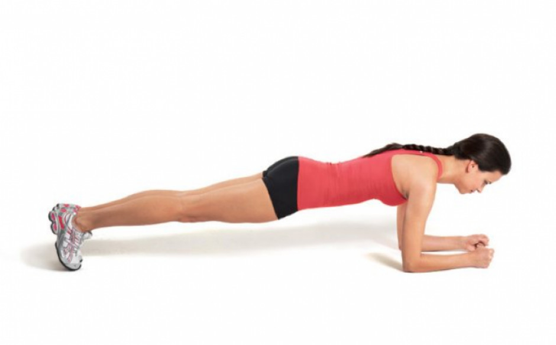
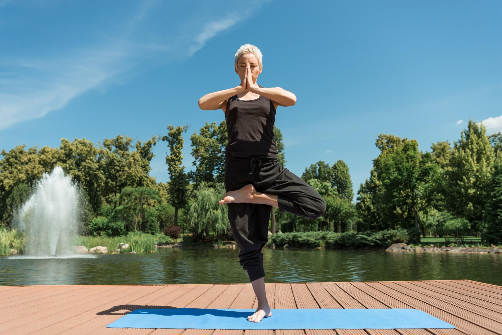

Vida Saludable
¿Qué es una Vida Saludable?
Una vida saludable no es vivir a base de lechuga ni pasar horas en el gimnasio. Es sentirte con energía, dormir bien, moverte sin odiarlo y comer sin culpa. Es encontrar el equilibrio entre cuidarte y disfrutar, entre lo que haces por obligación y lo que haces por placer. En tres palabras: sentirte vivo, no solo existir.

Consejos para una Vida Saludable
- Come frutas y verduras diariamente.
- Realiza ejercicio al menos 30 minutos al día.
- Bebe suficiente agua a lo largo del día.
- Duerme entre 7 y 8 horas cada noche.
- Practica técnicas de relajación y meditación.
La importancia de la nutrición
Tu cuerpo es la única casa que tienes para vivir. La nutrición no es una dieta pasajera, es el proceso biológico que decide cuánta energía tienes, cómo se siente tu mente y qué tan fuerte es tu escudo contra las enfermedades.
Beneficios de una buena alimentación
- Energía Inagotable: Convierte lo que comes en el combustible necesario para rendir al máximo en el trabajo, el estudio y el deporte, sin los clásicos "bajones" de la tarde.
- Escudo Natural: Una nutrición rica en vitaminas y minerales es la base de un sistema inmunológico capaz de combatir virus y bacterias antes de que te afecten.
- Mente en Equilibrio: Lo que comes afecta tu química cerebral. La buena alimentación mejora la memoria, el enfoque y ayuda a regular el estrés y la ansiedad.
- Longevidad Activa: Invertir hoy en tu plato es ahorrar mañana en medicinas. Previene enfermedades crónicas como la diabetes y la hipertensión de forma natural.
La importancia de hacer ejercicio
Hacer ejercicio es fundamental porque fortalece el corazón, mejora la circulación, controla el peso y previene enfermedades crónicas como la diabetes, hipertensión y ciertos tipos de cáncer. Además, libera endorfinas que mejoran el estado de ánimo, reducen el estrés, la ansiedad y potencian la salud cerebral, pero ¿Qué ejercicios podemos hacer para mejorar nuestra caldad de vida?
Lo mejor de lo mejor
Una vida saludable requiere al menos 60 minutos diarios de actividad física moderada (caminar, bicicleta) o 30 minutos vigorosa (correr, nadar). Incluye ejercicios cardiovasculares, entrenamiento de fuerza (sentadillas, flexiones, planchas) y actividades de equilibrio como yoga o Tai Chi. La constancia y el disfrute son claves para la longevidad.
Acontinuación te mostraremos que otro tipo de ejercicios puedes hacer



El bienestar de llevar una vida saludable
Llevar una vida saludable mejora el bienestar porque crea un equilibrio integral entre el cuerpo y la mente. Al alimentarte bien y mantenerte activo, fortaleces tu sistema inmunológico y previenes enfermedades crónicas, lo que te brinda la energía necesaria para afrontar el día a día. Además, estos hábitos impactan directamente en la salud mental, ya que reducen los niveles de estrés y ansiedad, mejoran la calidad del sueño y fomentan un estado de ánimo más estable y positivo. En última instancia, cuidarte no solo te permite vivir más tiempo, sino disfrutar de una mayor autonomía y una mejor relación con tu entorno.
Adiós al mito: Comer sano es cualquier cosa menos aburrido
"Muchos piensan que comer saludable se resume en ensaladas sin gracia y platos repetitivos. Pero la realidad es otra: llevar una buena alimentación es descubrir un mundo lleno de colores, texturas y sabores que no solo nutren tu cuerpo, sino que también alegran tu mesa. ¡Es hora de romper el mito!"
¡Aquí encontraras un sinfin de recetas deliciosas 😋😋😋😋!
Vista previa de Recetas Nestlé
Vista previa de Recetas Nestlé
Redes Sociales
2025 HSC
Todos los derechos reservados - Daniela Monserrat Hernández Cantú
ESC. PREFECO “PROF. AUGUSTO HERNÁNDEZ OLIVÉ” CLAVE EMS-2/18, PARAÍSO, TABASCO.
3E